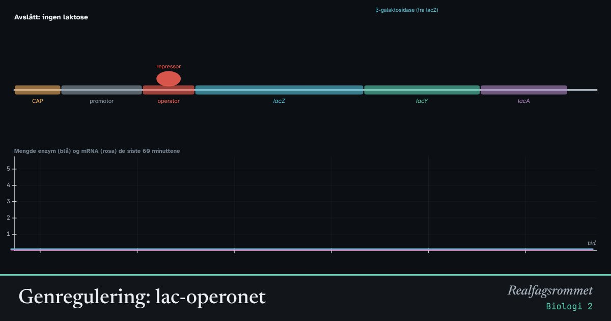

Genregulering: lac-operonet
Bakterien E. coli lager bare enzymene som bryter ned laktose når det finnes laktose, og helst bare når det ikke finnes glukose. Et protein, repressoren, sperrer genene til de trengs.
Start animasjonen
Formler
Om animasjonen
Genene lacZ, lacY og lacA ligger etter hverandre og leses av samtidig. Sammen med promotoren og operatoren kalles de et operon.
Uten laktose sitter repressoren på operatoren og stenger veien for RNA-polymerasen. Når det finnes laktose, binder et omdannet laktosemolekyl seg til repressoren, som endrer form og slipper taket.
Når glukosen er brukt opp, binder proteinet CAP seg foran promotoren og gjør det mye lettere for RNA-polymerasen å starte. Bakterien bruker altså helst glukose og skrur på laktosegenene for fullt bare når glukosen er borte.
Slik regulering gjør at bakterien ikke bruker energi på å lage proteiner den ikke trenger.
Prøv dette
- Hvilken kombinasjon av laktose og glukose gir mest enzym?
- Fjern laktosen. Hvorfor forsvinner ikke enzymet med en gang?
- Hvorfor er det lurt for bakterien å bruke glukose først?
- Gi et eksempel på genregulering hos mennesker.
Kompetansemål
- Biologi 2: Genetisk kode og regulering av genuttrykk